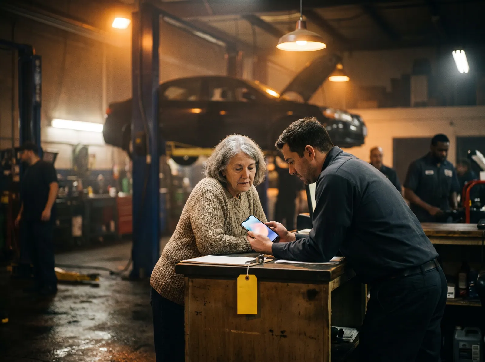
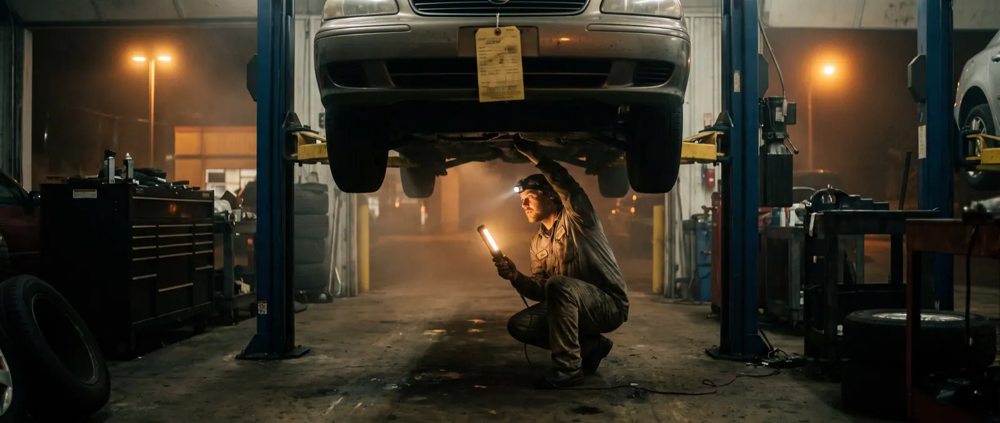
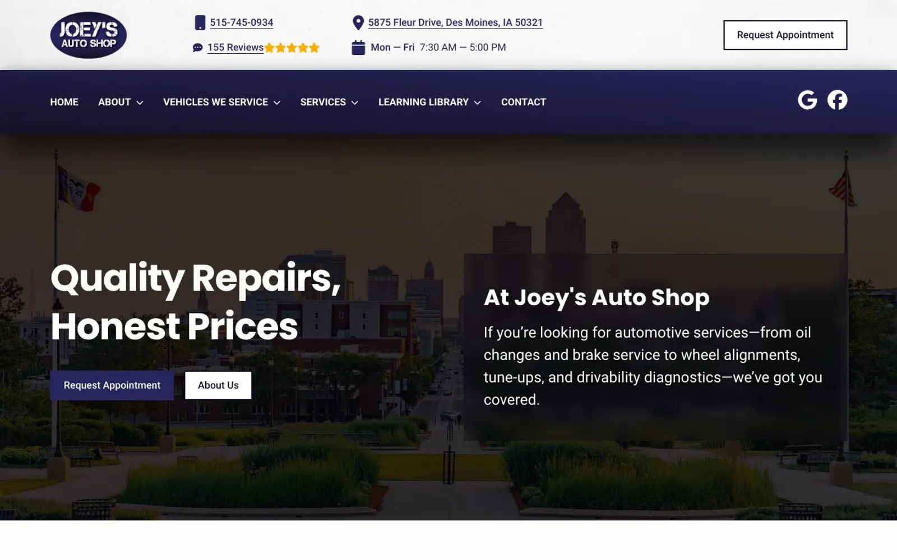

Theestimate startsonline
We read the websites of 174 independent auto shops and used-car dealers in the US the way a driver does: on a phone, often with a warning light on or a car to replace, asking what it costs and when they can come in.
0 websites
Four kinds of business
Eleven checks
The State of Independent Auto Websites · Q4 2026 · edition 2026-Q4

The headline
0%
of the websites in this study answer the driver's question.
Drivers ask seven questions. The median site answers three.
Across 174 independent auto websites, the median site answers four of the seven customer questions this edition tests. 29% show any price; 40% state a warranty with its terms.1
What a driver can find out before calling
We turned seven questions a driver or a used-car buyer asks into seven checks, then read each site for an answer a visitor could find on a phone.
Share of all websites answering each question · red = fewer than a third · tick = half
| The driver asks | Answered | Sites |
|---|
Figure 1. Share of sites that answer each question on the home page or a page it links to, read from the served HTML. Sorted from least to most answered.

Four kinds of business, side by side
General repair and service (55): median score 77, a price shown on 22%, online booking on 64%. Tire, brake and quick service (31): median score 76, a price shown on 19%, online booking on 61%. Collision and body (45): median score 76, a price shown on 4%, online booking on 44%. Independent used-car dealers (43): median score 72, a price shown on 72%, online booking on 56%.
Where each website scores
Overall website score out of 100, one dot per site; the yellow rule is each group's median
Figure 2. Overall website score out of 100, one dot per site. The yellow rule marks each group's median.

Four businesses, up close
Four real sites from this edition, one strong, two in the middle and one weak. Each photograph shows the kind of moment its findings describe; the business itself stays anonymous. The number is the overall website score; each dot is one check, filled when the site passes it.
Joey's Auto Shop
Tire, brake and quick service, Des Moines, IA. It answers 6 of the 7 customer questions this edition tests, passes every speed and accessibility check. Its overall website score is 81/100. Named as a positive example; every other site in this report is anonymous.

What it does well
- Tappable phone plus opening hours
- Makes named, or all makes and models
- Qualifications shown (ASE, I-CAR, AAA, OEM, BBB)
- Book, request an estimate or a test drive online
- Warranty stated with its terms
- Reviews marked up, in a widget or quoted
- Real phone visitors see the main content in 1.9 s (Chrome UX Report, 75th percentile; good is 2.5 s or less)
- No text fails the WCAG 1.4.3 contrast minimum
- Every image has a text description (WCAG 1.1.1)
- Clikiti pillar scores of 90 or more: accessibility 100, SEO 100, trust 92
Where it could still improve
- Not found on the home page or the pages it links to: a price shown: a service, a fee, a labour rate or a car
The drivers left out
A driver using a screen reader, a keyboard, or an old phone on a weak signal at the roadside is still a customer. These checks measure whether the site lets them in.3
Table 1. Technical checks, share of the 174 sites that fail each one.
How the sites were read
Read
The home page and up to eight pages it links to (services, prices, inventory, warranty, about, reviews, booking, contact), read as a server delivers them. The customer questions are answered here, by fixed published rules (Appendix A4).
Measure
Google Lighthouse (PageSpeed Insights) in a phone and a desktop render, with Chrome UX Report field data where it exists: load time, contrast and image descriptions. Repeatable.
Review
An expert usability review of each home page against Nielsen's heuristics, used only in the usability part of the score. Every issue must name the heuristic, a severity and the element, or it is dropped.
Read the full methodology Sample, definitions, scoring, precision and limitations, in Appendix A.

For agencies and freelancers
What this means for agencies
what to fix first, and how to pitch it
For small agencies and freelancers who sell websites to independent auto shops and used-car dealers. We scanned 174 of their websites: 1% score under 60 out of 100, and 70% leave at least three of the questions drivers ask unanswered. Here is where the winnable work is, which problems to lead a pitch with, and how to show them without days of spec design.
Who is realistic to win
Independent used-car dealers are the most winnable: the lowest median score in this report (72 out of 100), and 5% of them score under 60. Their problems are visible, specific and fixable by a small team.
| Type | Sites | Median | Under 60 |
|---|---|---|---|
| General repair and service | 55 | 77 | 0% |
| Tire, brake and quick service | 31 | 76 | 0% |
| Collision and body | 45 | 76 | 0% |
| Independent used-car dealers | 43 | 72 | 5% |
Score out of 100. "Under 60" is the share of sites that miss most of what a driver looks for.
5 problems to lead a pitch with
- 87%Loads in under 2.5 s on a phone Build
Resize and compress the hero image and inventory photos, defer scripts, aim for under 2.5 s on a phone.
Your home page takes several seconds to appear on the phone of someone stuck at the roadside.
- 77%Text contrast passes 4.5:1 Quick fix
Raise text contrast to at least 4.5:1 in the theme.
Parts of the site are hard to read, and it is a WCAG failure.
- 71%Roughly what will it cost? Content
Publish starting prices for common jobs (diagnostic fee, oil change, brakes, alignment) or the labour rate; for dealers, a price on every car.
The first question a driver has is what it will cost. Your site makes them call to ask.
- 60%Do you stand behind the work? Quick fix
State the warranty with its terms (months and miles, or lifetime on body work) on the home and services pages.
You guarantee your work. The site never says so, so the cheaper shop down the road looks the same as you.
- 53%Are you qualified? Quick fix
Show the shop's qualifications by name: ASE, I-CAR, AAA Approved, manufacturer certifications.
Your technicians are certified and your site keeps it a secret.
Share of sites with the problem. WCAG items are accessibility failures. Every check cites a standard in the method section.
How to show a prospect their problems, and a redesign
- 1Lead with their problem, not your services
Open with one question the site fails, for example loads in under 2.5 s on a phone (87% of sites in this report miss it), and show the exact page where the answer should be.
- 2Put a number on it
Compare their site with the sector: across 174 independent repair, tire and collision shops and used-car dealers sites, the median scores 76 out of 100 and answers 4 of the 7 questions drivers ask. A number travels further inside the client than an opinion.
- 3Show the fix without days of spec work
A rough redesign that answers those questions persuades better than a proposal, but it usually costs a designer a day or two per prospect. You can sketch it by hand, or use Clikiti: the scan is free and shows any site's problems in about a minute, and paid plans draft a redesign of the home page from the prospect's own brand, from about $2.33 per pitch.
Scan a prospect's site free No sign-up. You see what the prospect would see.
Show every shop what its drivers see
Clikiti reads a shop's site the way a driver does, states what it found, and generates the redesign you present before the first call.
See your market on ClikitiMethodology
How this study was designed, who was included, what was measured and how far the results can be relied on. It is written so that an agency can share it with a shop owner who wants to check the evidence behind a pitch.
A1. The research question
When a driver needs a repair, or a buyer wants a used car, and looks an independent shop or lot up online, usually on a phone, can they find out how to reach it and when it is open, whether they can book without calling, roughly what it will cost, whether the work or the car is guaranteed, whether the people are qualified, whether it handles their car and whether other drivers vouch for it?
Population. Independently owned US auto businesses with one to three locations and their own website, in four groups: general repair and service, tire, brake and quick service, collision and body, and independent used-car dealers. These are the auto businesses a small or mid-size web agency can realistically win as clients.
A2. Who was studied
The sample was built from local search listings, city by city, then screened so that every site in it is one an independent agency could realistically win.
| Source | What it contributes | Sites |
|---|---|---|
| Local search, general repair | Independent general auto repair and service shops found in local search results, city by city | 55 |
| Local search, tire and brake | Independent tire, brake, alignment, transmission and exhaust shops found in local search results, city by city | 80 |
| Local search, collision and body | Independent collision repair, auto body and paint shops found in local search results, city by city | 45 |
| Local search, used-car dealers | Independent used-car dealers found in local search results and dealer listings marked independent, city by city | 43 |
Included
- An independently owned business with one to three locations and its own website (not a directory, marketplace or social profile)
- Based in the United States
- Home page responds and shows the business it claims to be (each home page title was checked before scanning)
Excluded
- Carmakers and franchised new-car dealerships
- Franchises and chains (for example Midas, Meineke, Firestone, Jiffy Lube, Caliber, Gerber, Maaco, CARSTAR, CarMax, Carvana, DriveTime) and any business with four or more locations or in several states
- Body shops owned by a dealer group, and buy-here-pay-here chains
- Directories, marketplaces and lead-generation pages (Yelp, RepairPal, CarGurus, Cars.com, AutoTrader)
- Parked, placeholder, password-protected or unreachable sites, and duplicates
| From list to sample | Sites |
|---|---|
| Candidates listed | 245 |
| Removed at screening: the site refused automated visitors (40) | −40 |
| Removed at screening: no response, or no page served to automated visitors (17) | −17 |
| Removed at screening: parked or placeholder (1) | −1 |
| Removed at editorial review: template text, a hijacked domain serving unrelated content, and a duplicate of another dealer (4) | −4 |
| Cohort | 183 |
| Region (US Census) | General repair and service | Tire, brake and quick service | Collision and body | Independent used-car dealers | All |
|---|---|---|---|---|---|
| Northeast | 17 | 7 | 10 | 8 | 42 |
| Midwest | 13 | 8 | 14 | 11 | 46 |
| South | 15 | 13 | 15 | 15 | 58 |
| West | 10 | 3 | 6 | 9 | 28 |
| All regions | 55 | 31 | 45 | 43 | 174 |
A3. How the sites were read
Pages. The home page, then for each of eight topics (services, prices and specials, inventory, warranty, about, reviews, booking, contact) the best-matching link on the home page.
Speed and accessibility. Google PageSpeed Insights (Lighthouse) on a mid-range phone profile and on desktop, plus Chrome UX Report data from real visitors over the previous 28 days where Google publishes it for the site.
Crawler conduct. One request at a time to each site, at least 400 ms apart, at most nine pages per site; robots.txt is read and obeyed for every page requested; a site that refuses is left out and never retried. The crawler identifies itself as Mozilla/5.0 (compatible; ClikitiResearch/1.0; +https://clikiti.com).
A4. What was measured
7 questions drivers and used-car buyers ask before they call or drive over, answered from what each site publishes, and 4 technical checks against published standards. A check passes only when the rule below is met; anything the crawler cannot confirm counts as not answered.
| Question | Counts as answered when | Standard |
|---|---|---|
| How do I reach you, and when are you open?Tappable phone plus opening hours | The home page has a tappable phone link, and the home, contact or about page states opening hours (a day and a time range). | Clikiti customer question 1 of 7 |
| Do you handle my car?Makes named, or all makes and models | Three or more car makes are named on the home, services, inventory or about page, or the site says it works on or sells all makes and models. | Clikiti customer question 2 of 7 |
| Are you qualified?Qualifications shown (ASE, I-CAR, AAA, OEM, BBB) | A qualification or affiliation is named: ASE, I-CAR or Gold Class, AAA Approved, a manufacturer certification, a parts-network programme (NAPA AutoCare, Bosch, ACDelco), a state inspection station, BBB accreditation or NIADA membership. | Clikiti customer question 3 of 7 |
| Can I book without calling?Book, request an estimate or a test drive online | A link, button or embedded scheduler lets the visitor book service, request an estimate or quote, or schedule a test drive online. | Clikiti customer question 4 of 7 |
| Do you stand behind the work?Warranty stated with its terms | A warranty or guarantee is stated with its terms: months and miles, years, or lifetime or nationwide. | Clikiti customer question 5 of 7 |
| Roughly what will it cost?A price shown: a service, a fee, a labour rate or a car | A dollar price is shown for a named service, a fee or a labour rate, or a vehicle price appears next to a model year (discounts, savings and monthly payments do not count). | Clikiti customer question 6 of 7 |
| Do other drivers vouch for you?Reviews marked up, in a widget or quoted | Customer reviews are marked up for search engines (Review or AggregateRating structured data), shown through a review widget, or at least two customer testimonials are quoted. | Clikiti customer question 7 of 7 |
| Technical checks | ||
| Loads in under 2.5 s on a phoneLoads in under 2.5 s on a phone | Real visitors on phones see the main content within 2.5 seconds (Chrome UX Report, 75th percentile). Where Google publishes no visitor data, the phone lab test is used. | Core Web Vitals · LCP |
| Text contrast passes 4.5:1Text contrast passes 4.5:1 | No text on the home page fails the WCAG 1.4.3 minimum contrast of 4.5:1, in either the phone or desktop test. | WCAG 1.4.3 |
| Images have text descriptionsImages have text descriptions | Every meaningful image on the home page has a text description (WCAG 1.1.1). | WCAG 1.1.1 |
| AutoRepair, AutoBodyShop or AutoDealer structured dataAutoRepair, AutoBodyShop or AutoDealer structured data | The site describes the business to search engines with AutoRepair, AutomotiveBusiness, AutoBodyShop or AutoDealer structured data. | Schema.org · AutomotiveBusiness |
A5. The website score
Each site's overall score (0 to 100) is Clikiti's website score, rubric 2.0.0. It measures the website, not the business, and the customer questions above do not feed it. It is a weighted mean of five pillars:
| Pillar | Weight | Based on |
|---|---|---|
| Usability | 30% | Checks of the home page for broken links and images, and an expert review of the page as rendered on a phone and on a desktop screen, against Jakob Nielsen's ten usability heuristics. Each issue must name the heuristic, a severity on the Nielsen Norman Group scale and the exact element or wording; issues without all three are discarded, and two independent passes must agree. |
| Speed | 25% | Google Lighthouse on a mid-range phone (60%) and on desktop (20%), and real-visitor Core Web Vitals from the Chrome UX Report (20%) where available. |
| Accessibility | 25% | Google Lighthouse accessibility audits (70%) and Clikiti's own WCAG checks of the served page (30%). |
| Search | 10% | Google Lighthouse SEO audits (60%) and Clikiti's own search checks of the served page (40%). |
| Trust | 10% | Google Lighthouse best-practice audits (40%) and security header checks (60%). |
Within a pillar, each issue costs points by severity (critical, high, medium, low) and by how many times it occurs; issues based on judgement count at 70% of measured ones, and duplicates of the same root cause count once. On the four business profiles, the number out of 100 is this overall score, and each dot is one check in its group: filled when the site passes it, hollow when it does not.
A6. Precision
With 174 sites, a share reported for the whole sample is precise to within ±7.4 percentage points at 95% confidence (worst case, a 50% share; 1.96 × √(0.25/n)). By type: general repair and service ±13.2 (n = 55); tire, brake and quick service ±17.6 (n = 31); collision and body ±14.6 (n = 45); independent used-car dealers ±14.9 (n = 43). Differences between types smaller than these margins should be read as similar. Percentages are rounded to whole numbers; medians are the middle value of the sites in a group.
A7. Quality control
- Every home page in the cohort was fetched and its title checked against the listed business before scanning
- Detection rules were checked against the evidence they record for a sample of businesses in every group, and revised before the final run
- Every published figure is recomputed from the data at build time, and a statement in the text that the data does not support stops the build
- Results are published only after automated checks for missing data, anonymity, accessibility of the report itself and the margin of error statement pass
A8. Limitations
- A point-in-time snapshot: sites change, and a site may have improved or declined since it was read.
- Only public pages were read: the home page and pages it links to. Inventory search tools, chat widgets and multi-step estimate forms were not tested.
- Answers are read from the page as a server delivers it. Content that only appears after scripts run in the browser (some inventory listings, schedulers and review widgets) is not seen, which the study counts as a gap a search engine or a slow phone would also meet.
- 57 candidates blocked or did not answer automated visitors and are not in the study; sites behind such protection may differ from those studied.
- The study reports what a website shows. It does not judge any repair, vehicle or price, or compliance with any consumer or dealer licensing rule.
- Automated accessibility tests find only part of what WCAG covers; keyboard and screen-reader use need a manual audit.
- The sample is a structured list of real, independent businesses, not a random draw. Margins of error are given as a guide to precision, not as a guarantee that the results hold for every business in the country.
A9. Data, licence and corrections
The aggregate results are published as CSV and JSON beside this report under the Creative Commons Attribution 4.0 licence: you may reuse, adapt and share them, including in client proposals, with a credit to Clikiti and a link. No per-site results are published. Corrections and removal requests are reviewed and answered personally; see the end of this report.
Businesses in this study
The 174 websites in this edition, by type. This list says who was scanned and nothing more: results in this report are shown only in aggregate or anonymously.
General repair and service (55)
- 27th St. AutomotiveBoise, ID
- ABC Auto WorksBoston, MA
- Alexander's Import Auto RepairMinneapolis, MN
- ALMAR Auto RepairCharlotte, NC
- Aloha Auto RepairBoise, ID
- AutoWorks of TampaTampa, FL
- B&R Auto Repair & TireCharlotte, NC
- Baum Boulevard AutomotivePittsburgh, PA
- Beck Service CenterIndianapolis, IN
- Bill's Crestmoor AutomotiveDenver, CO
- Bison Automotive & DetailBuffalo, NY
- Blazek Diagnostic & Automotive RepairGarden City, ID
- Botticello Auto RepairWest Hartford, CT
- Brighton Motor ServiceBoston, MA
- Castleton Auto RepairIndianapolis, IN
- D & L Auto RepairBoston, MA
- DMS of Boston (Dynamic Motorsports)Boston, MA
- Erin and Bill's Automotive & TransportBuffalo, NY
- Flanders Brake & AlignmentHartford, CT
- Flanery Brothers AutomotiveMinneapolis, MN
- Garry's AutomotiveBoise, ID
- Hillside Automotive CenterHartford, CT
- Hobbs AutomotiveIndianapolis, IN
- I-70 Auto ServiceKansas City, MO
- Import Specialty ServiceNashville, TN
- IN Collision & Auto RepairBuffalo, NY
- Kevin's Automotive ServicesDenver, CO
- Kevin's KC Brake & AutoKansas City, MO
- Lawrence's Auto ServiceCharlotte, NC
- Lawson & Son Auto RepairNashville, TN
- Lockhart TirePittsburgh, PA
- Longhorn AutomotiveAustin, TX
- Majesty Auto RepairNashville, TN
- Mike's Foreign Car ServiceColumbus, OH
- Ming's Auto RepairBoston, MA
- Motorized SolutionsDenver, CO
- Nashville Auto Services and MotorsportsNashville, TN
- Newman's AutomotiveAustin, TX
- Paul's Auto RepairEast Hartford, CT
- Pinnacle Tire and Auto ServicePittsburgh, PA
- Precision Auto Sales & ServiceKansas City, MO
- RoKr AutoAustin, TX
- Sager & Sons AutomotiveBoise, ID
- Shifflet Auto CareColumbus, OH
- Southeast AutoDenver, CO
- Swift Auto ServiceIndianapolis, IN
- Tampa Bay Quick LubeTampa, FL
- Tech One AutomotiveAustin, TX
- Tevis Auto ServicePittsburgh, PA
- The Neighborhood GarageCharlotte, NC
- Tom & Jerry's Auto ServiceColumbus, OH
- Total AutomotiveBuffalo, NY
- Vick's Expertune AutomotiveAustin, TX
- West Highlands Auto RepairDenver, CO
- Wilson's Auto WorldMinneapolis, MN
Tire, brake and quick service (31)
- 55 Tires and ServiceSt. Louis, MO
- Access TransmissionSan Antonio, TX
- Albany Auto Service & TireAlbany, NY
- American Transmissions, Inc.Stone Mountain, GA
- Atlanta Undercar SpecialistsMarietta, GA
- Authorized Motor ServicePhiladelphia, PA
- Blatt Tire & Auto RepairPhiladelphia, PA
- Bob's Transmission ServiceSchenectady, NY
- Brown's Alignment, Brake, and Auto RepairRaleigh, NC
- C & C Auto ServiceRaleigh, NC
- Chamberlin AutomotiveDes Moines, IA
- Deals TiresLouisville, KY
- Firebird TirePhoenix, AZ
- Gordy Tire and AutomotiveAtlanta, GA
- Gower's Brake & AlignmentRaleigh, NC
- J-N-J Auto ServicePhoenix, AZ
- Joey's Auto ShopDes Moines, IA
- K & M Foreign & Domestic Auto RepairAtlanta, GA
- Luckey's Tire & ServiceMilwaukee, WI
- M.T. Schiele TransmissionsAffton, MO
- Merrill Axle and Wheel ServiceDes Moines, IA
- Midwest TireOmaha, NE
- Option Transmission ServiceSan Antonio, TX
- Petro MobilProvidence, RI
- Pro TireRaleigh, NC
- ProTech AutoNorth Highlands, CA
- RM Auto CareNorth Providence, RI
- San Antonio Alignment SpecialistsSan Antonio, TX
- Sergeant ClutchSan Antonio, TX
- Suspension Shop IncOmaha, NE
- Universal Auto RepairPhiladelphia, PA
Collision and body (45)
- Advance Collision & RepairMadison, WI
- American Collision & Hail RepairWichita, KS
- Angstadt AutobodyAllentown, PA
- ASD Auto Body & RepairWorcester, MA
- Boulevard Garage & AutobodyWorcester, MA
- Bruce's Super Body ShopRichmond, VA
- Car CenterGrand Rapids, MI
- Central Auto BodyWorcester, MA
- City Collision RepairOklahoma City, OK
- Coachworks Auto Repair & Collision CenterAllentown, PA
- Comfort Auto & Body RepairPortland, OR
- Doug's Auto BodyGrand Rapids, MI
- Eddy's Body ShopWichita, KS
- Emerson CollisionRochester, NY
- Fetzner Collision Inc.Rochester, NY
- Franchi Brothers Auto BodyWorcester, MA
- Freeman Collision CenterOklahoma City, OK
- Green Township CollisionCincinnati, OH
- Harr Collision CenterWorcester, MA
- Huffstutler Paint and BodyBirmingham, AL
- J Willis Auto BodyOklahoma City, OK
- KD Autobody Repair CollisionJacksonville, FL
- Lindsay's Auto Body & PaintRichmond, VA
- Llanfair Body ShopCincinnati, OH
- Lynch Auto Body, Inc.Madison, WI
- M Work Auto BodyCincinnati, OH
- Mark's Auto BodyCincinnati, OH
- Novix AutobodyJacksonville, FL
- O'Neill's Body ShopGrand Rapids, MI
- OKC Auto WorksOklahoma City, OK
- ProDent Collision CenterBirmingham, AL
- Professional Auto Body & Paint Inc.Portland, OR
- Prostar Collision CenterJacksonville, FL
- Riverchase Collision RepairBirmingham, AL
- Roman Auto BodyMadison, WI
- Roses Auto BodySalt Lake City, UT
- S&S Auto Body ShopRichmond, VA
- San Jose CollisionJacksonville, FL
- Schneider Auto Body & PaintSalt Lake City, UT
- Service Body ShopWichita, KS
- Sparkle Auto BodyMadison, WI
- Speed's Auto BodyPortland, OR
- Victor's Body ShopJacksonville, FL
- VIP Collision CenterPortland, OR
- Vogel's CollisionRochester, NY
Independent used-car dealers (43)
- 10K AutosGreenville, SC
- ABZ MotorsHouston, TX
- Airline Auto MartBaton Rouge, LA
- Allegiant AutomotiveSpringfield, MO
- Auto DepotAlbuquerque, NM
- Barney's Used CarsSioux Falls, SD
- Buy Right Auto SalesFort Wayne, IN
- CarspotCleveland, OH
- ChillimycarguyKnoxville, TN
- CK Auto SalesManchester, NH
- Comet Auto SalesManchester, NH
- Crown Auto SalesBaton Rouge, LA
- CRU AutomotiveHouston, TX
- Cuse CarsSyracuse, NY
- DriveTrendCleveland, OH
- Freedom Auto SalesAlbuquerque, NM
- Harrisburg Auto CenterHarrisburg, PA
- Hasic Auto SalesHarrisburg, PA
- Hilltop Car SalesKnoxville, TN
- Knox Auto HouseKnoxville, TN
- Lakeshore MotorsCleveland, OH
- Leahy's Automotive SalesHarrisburg, PA
- Mario's HoustonHouston, TX
- Northtown Auto SalesSpokane, WA
- Paramount Auto SalesTucson, AZ
- Patriot Auto SalesCleveland, OH
- Plaza Auto SalesGreenville, SC
- Port City Auto SalesBaton Rouge, LA
- Professional Auto Sales & ServiceFort Wayne, IN
- R.J. Cackovic Auto SalesHarrisburg, PA
- Raul's Auto SalesHarrisburg, PA
- Summit Auto ExchangeSpokane, WA
- SWT Auto SalesSioux Falls, SD
- The Auto NinjasTucson, AZ
- Trade Up Auto SalesGreer, SC
- Tradewinds Motor CenterCleveland, OH
- Tucson Used Auto CenterTucson, AZ
- U.S. Auto NetworkKnoxville, TN
- USA MotorcarsCleveland, OH
- V8 Auto SalesSpokane, WA
- Valley Auto LiquidatorsSpokane Valley, WA
- We AutoBaton Rouge, LA
- Wholesale Direct & Perelli Auto SalesGreenville, SC
About this study
This report is based on automated scans of publicly available home pages, and pages they link to, run on 2026-10-14. Its findings are a point-in-time technical snapshot of each website. They are not a judgement of any shop's repairs, any dealer's vehicles or anyone's prices, and automated checks may contain errors. This report is not a judgement of the quality of any repair, vehicle or price, and it does not assess compliance with any consumer or dealer licensing rule. Clikiti is not affiliated with, and does not endorse, any business listed here; trademarks belong to their owners. The report is provided “as is” under CC BY 4.0, without warranty of any kind. Every person in this report's photographs is AI-generated; none is a real person. The one business screenshot is the featured business's own home page, shown unaltered.
Remove my business from this study
We review every request and reply when it's done; removed businesses are excluded from future editions.